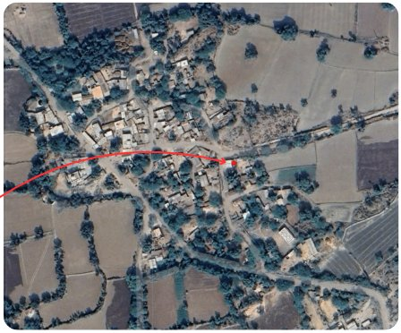
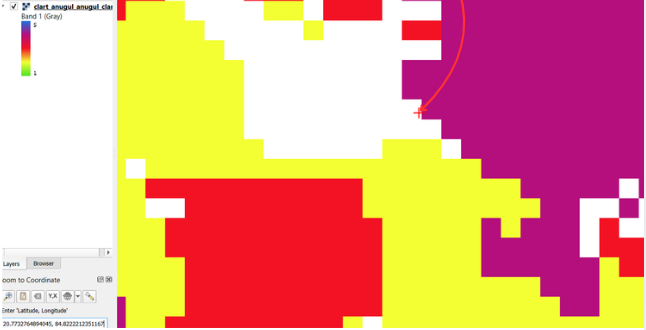
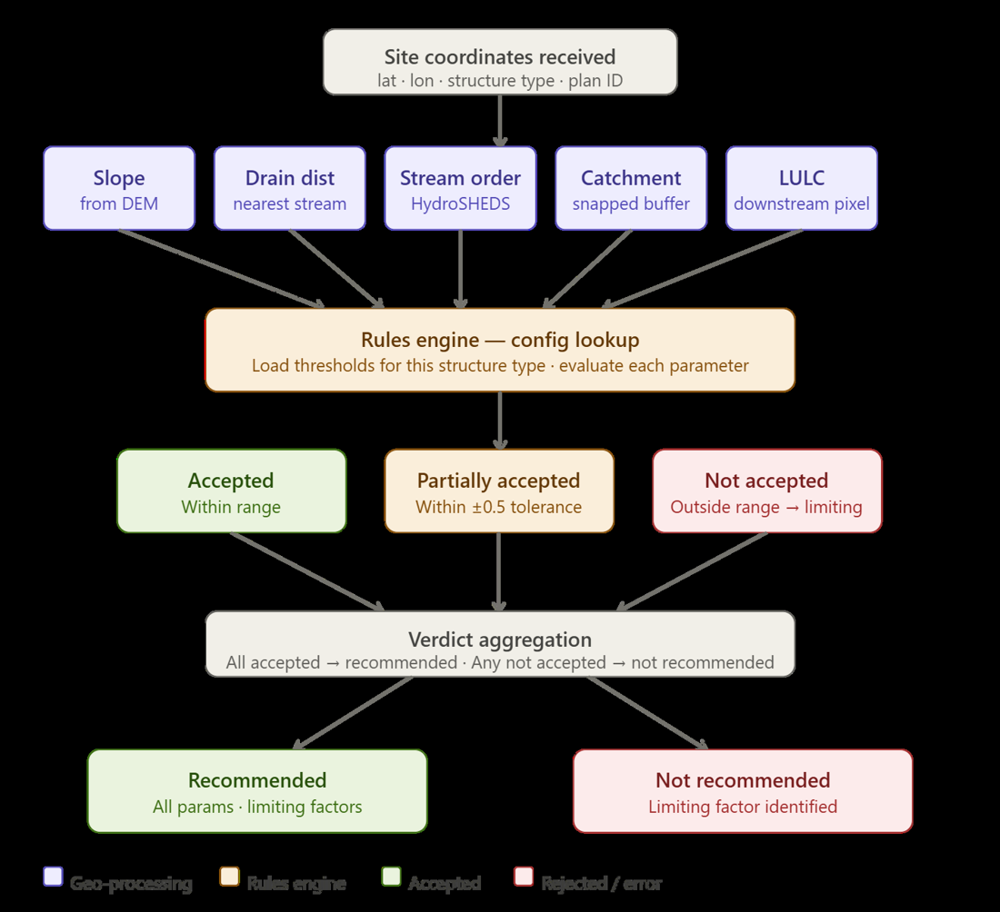
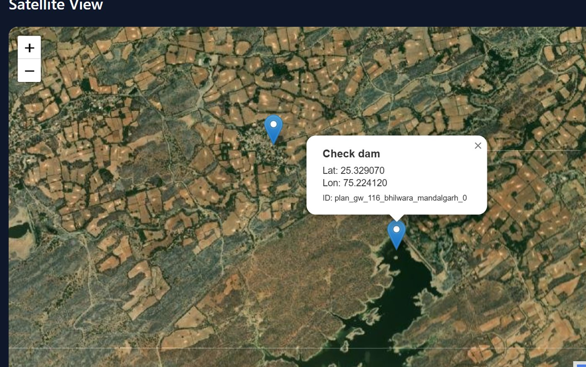
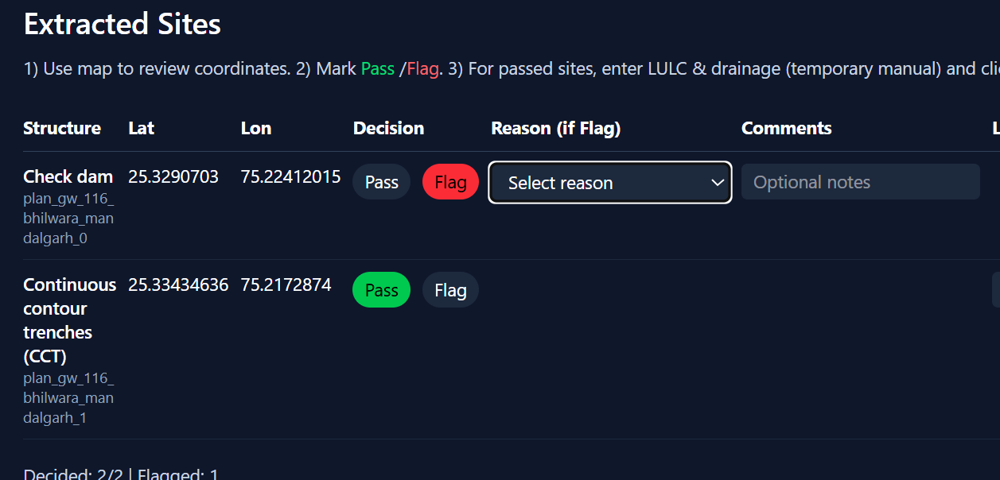
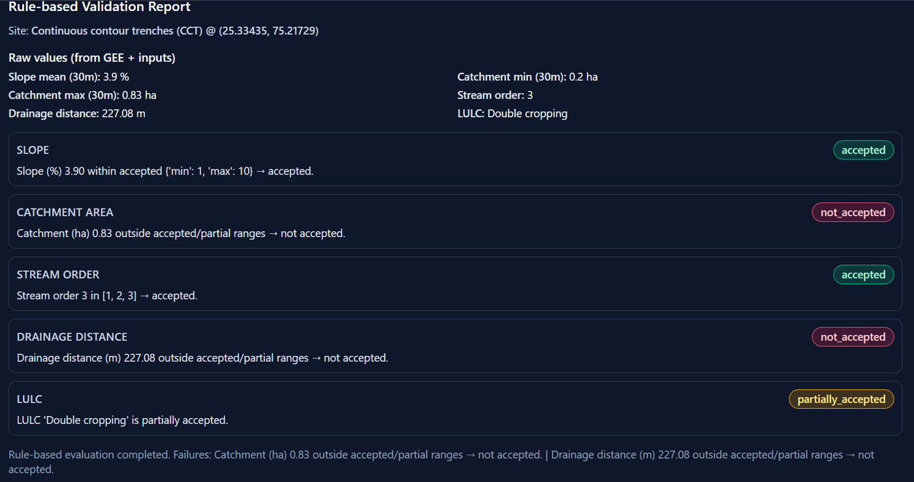
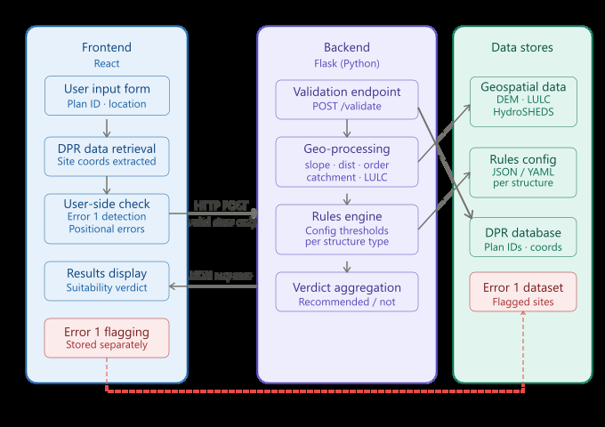

Why siting matters
Over half of India's farmland depends on rainfall, and climate variability makes that rainfall less predictable. Water-harvesting structures such as farm ponds, check dams and contour trenches help capture runoff and recharge groundwater, but only if they are in the right place. A wrongly sited structure can capture too little water, fail under high flow, cause erosion or waterlogging, and erode trust in public programmes. Planning still relies largely on field judgment and fixed guidelines.
CoRE Stack is a platform for community-led natural resource management used by government and NGO partners. Its plans are written up as detailed project reports (DPRs), which list proposed structures and their locations.
Five parameters, 24 structures
I set threshold ranges for every structure type from literature, domain guidelines and field observation, and colour-coded each parameter as suitable, partly suitable or not suitable.
Click a parameter to see why it matters, and its value at one validated site (a contour trench in Bhilwara, Rajasthan):
Controls runoff speed, erosion and structural stability.
Rule for a continuous contour trench: 1–10%. Observed: 4.38% suitable
How close the site is to flow paths: water availability and the risk of overtopping.
Observed: 132.68 m partly suitable — moderate proximity still collects runoff well.
Flow magnitude: whether a site suits storage or recharge structures.
Rule: 1–3 suitable. Observed: 3 suitable
The upstream area that drains to the site, which sets the runoff volume.
Rule: 2–10 ha. Observed: 2.12 ha suitable
Surface type: affects infiltration, runoff and whether building is feasible.
Observed: double cropping partly suitable — the cropland would benefit from better soil moisture.
Verdict for this site: recommended — no limiting factor.
Ground-truthing 30 sites
I analysed every proposed site from four plans in three districts in QGIS and compared it with the rules.
System-side data problems (5 land-use misclassifications, 6 missing CLART data) were found at 11 sites.
Three kinds of failure we found:
Example: a contour trench was requested on a built-up location in Bhilwara. 14 of 30 sites had user-side placement errors.

Land-use misclassification at 5 sites and missing CLART data at 6 sites. Example: a water absorption trench in Angul, Odisha, fell on a no-data area.

Of the 16 sites that could be evaluated, 10 failed one or more thresholds. Reviewing them shows where thresholds may be too strict or where planners chose a structure that does not fit the site.
The validation tool

Users enter a plan ID and location; the tool fetches the plan's sites, checks placement first (and flags errors for review), then computes the five parameters in Google Earth Engine and marks each structure as recommended or not. A ±0.5 tolerance at threshold boundaries avoids false rejections from small measurement differences.




How each parameter is extracted
- Slope: from SRTM elevation, converted to percent, averaged within 30 m.
- Drainage distance: shortest distance to the nearest mapped drainage line.
- Catchment area: minimum and maximum within 30 m from a flow-accumulation raster.
- Stream order: sampled at the site.
- Land use: sampled at the point, downstream along the flow (3 steps), or as the dominant class within 30 m, depending on how the structure works.
In progress: learning from the sites
I am training a Random Forest (leave-one-out cross-validation on the 30 sites) to see whether validation outcomes follow learnable patterns and which parameters matter most, and a recommender that suggests the best structure for a site. The goal is not to replace the rules but to find where they are too strict and where planners systematically choose the wrong structure.